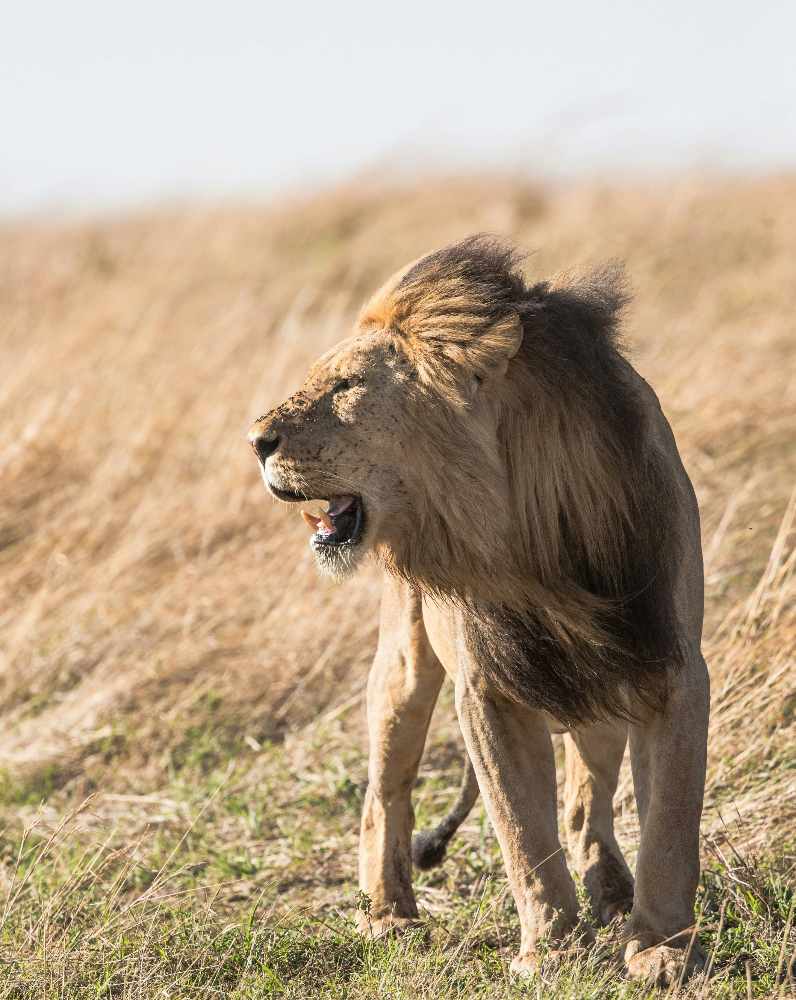
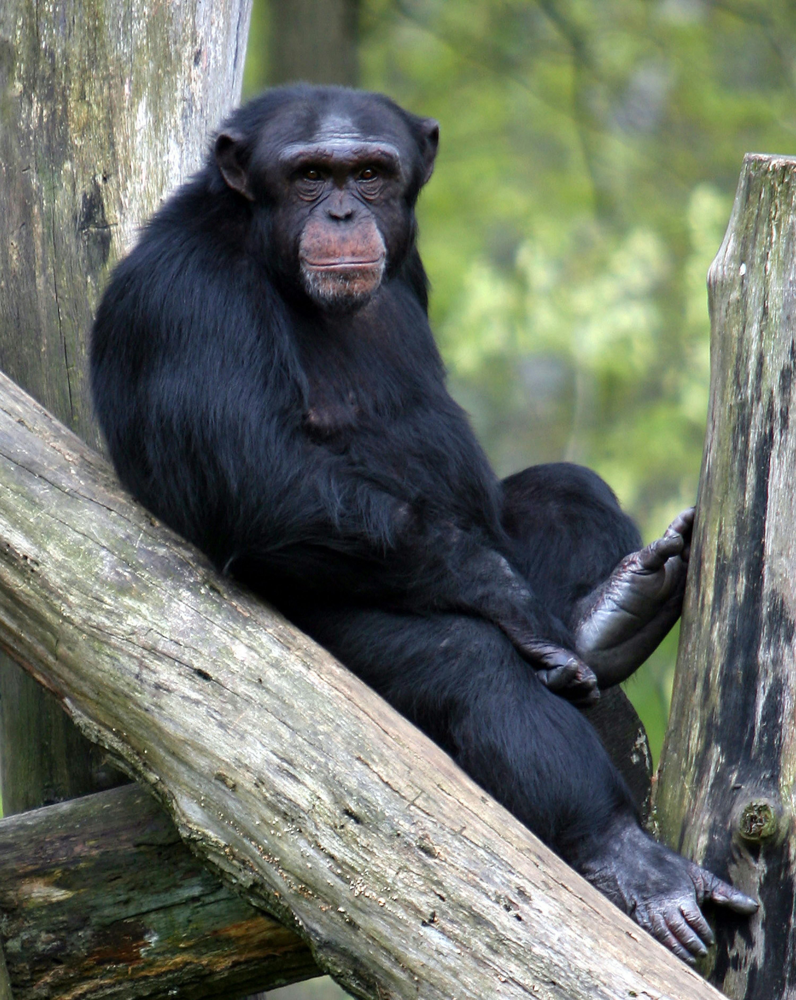

habitats et animaux

Savane
Jungle

 Forêt
Forêt
S'émerveiller, apprendre et protéger.
Au zoo d'ARCADIA, découvrez la beauté du monde animal, émerveillez-vous devant la diversité de la faune, et engagez-vous à protéger les animaux et notre planète pour les générations futures.
Forêt

Le zoo Arcadia se distingue par son engagement écologique exemplaire, étant entièrement autonome en énergie grâce à l'utilisation de panneaux solaires et d'éoliennes. La gestion de l'eau y est également 100% verte, avec un système innovant de récupération des eaux de pluie et de filtration naturelle à travers des bassins plantés de roseaux. Tous les déchets produits sont soit recyclés, soit valorisés en compost pour nos jardins. Enfin, la nourriture destinée aux animaux est exclusivement locale, provenant de fermes partenaires qui pratiquent une agriculture durable. Arcadia incarne ainsi une harmonie parfaite entre préservation de la biodiversité et respect de l'environnement.